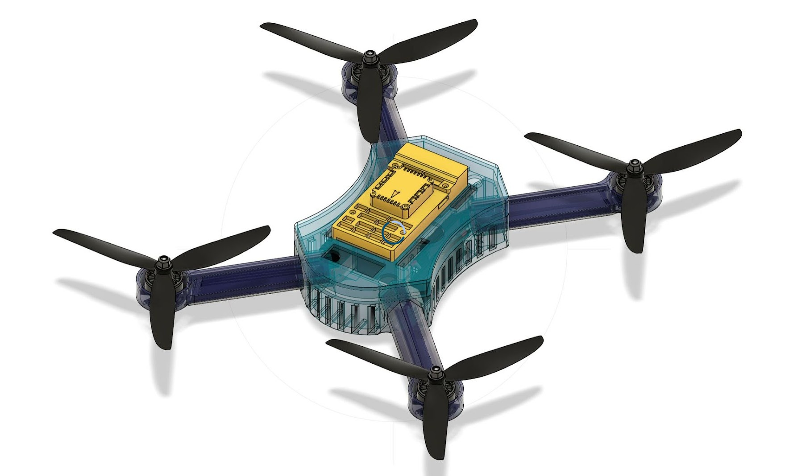
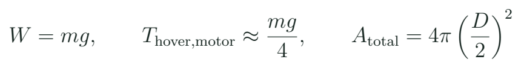
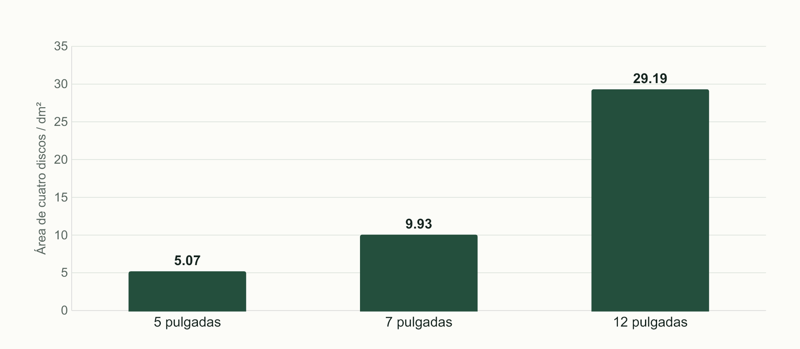

Reconocer el dron y definir qué vamos a construir
Reconocer subsistemas y convertir una necesidad en requisitos para un multirrotor de referencia.
El dron sobre la mesa
Antes de comprar o soldar, necesitamos saber qué función cumple cada pieza. El bastidor sostiene y posiciona los componentes; el conjunto motor–hélice produce empuje; el ESC conmuta la energía que recibe de la batería; la controladora estima el estado del vehículo y genera órdenes. El receptor aporta el mando del piloto. Una cámara y un transmisor de vídeo, si existen, forman otra cadena. Esta separación ayuda a investigar un fallo: que haya vídeo no demuestra que el receptor esté entregando mando.

MECRO comparará sus equipos de 5, 7 y 12 pulgadas. Aquí la cifra describe el diámetro de hélice usado como referencia de clase; no es la longitud total de la aeronave ni la diagonal del bastidor. El equipo grande mostrará una arquitectura con autopiloto tipo Pixhawk. Los pequeños permitirán trabajar principalmente Betaflight. Ninguna de esas asociaciones constituye una regla universal: el fabricante y el modelo concreto deciden qué puede instalarse.
Dibuja dos recorridos sobre una fotografía: energía desde batería a ESC y motor, e información desde mando a receptor y controladora. El mismo conector puede llevar energía y señal, pero esas funciones siguen siendo diferentes. Una etiqueta legible y una referencia de modelo valen más que reconocer una pieza por su color.
Misión, tamaño y forma de operación
Una misión de aprendizaje debe ser concreta. “Quiero el mejor dron” no permite elegir componentes. “Quiero aprender a ensamblar un quad y demostrar vuelo básico con el docente” permite priorizar documentación, compatibilidad y facilidad de revisión. Una cámara, una carga o una autonomía deseada cambian el presupuesto de masa y energía. El expediente empieza por requisitos y se actualiza cuando la selección de piezas revela una limitación.
Tres referencias del curso
| Referencia | Qué permite estudiar | Qué falta conocer |
|---|---|---|
| 5 pulgadas | Distribución compacta y configuración Betaflight | Bastidor, motor, FC y batería exactos |
| 7 pulgadas | Cambio de hélice, masa y energía | Tabla motor–hélice y espacio disponible |
| 12 pulgadas | Autopiloto, alimentación y GPS | Modelo del autopiloto y conexiones reales |
FPV significa que el piloto recibe una vista desde la aeronave. No es el nombre de un firmware ni una dimensión. Betaflight no se convierte en un simulador porque muestre un modelo 3D; la vista representa orientación de sensores y configuración. ArduPilot es una familia de firmware y Mission Planner es una estación de tierra. Reconocer estas categorías evita comprar un componente esperando una función que pertenece a otro subsistema.
Tamaño y función
Dos drones llevan hélices de 7 pulgadas. Uno tiene vídeo y el otro no. ¿Son la misma arquitectura?
Ver razonamiento del caso
Comparten una dimensión de referencia, pero pueden tener distintas controladoras, interfaces, alimentación y modos. La comparación necesita la lista real de componentes.
Masa, empuje y área que barre la hélice
La masa incluye batería, cableado, tornillería y carga, además de las piezas grandes. En vuelo estacionario, el empuje vertical total compensa aproximadamente el peso. Es una condición de equilibrio útil para seleccionar, no una descripción completa de maniobras o viento. El peso se expresa en newtons; las tablas comerciales suelen usar gramos fuerza. La lectura siempre identifica qué unidad está utilizando.

De 5 a 7 pulgadas
¿Aumentar el diámetro de 5 a 7 pulgadas aumenta el área en 40 %?
Ver razonamiento del caso
El diámetro aumenta 40 %, pero el área cambia con el cuadrado: (7/5)² = 1,96. El área de disco es 96 % mayor. Ese resultado geométrico no significa 96 % más autonomía.
El diámetro por sí solo no selecciona un motor. El paso, número de palas, régimen de giro, alimentación y geometría modifican la carga. Un bastidor debe admitir la hélice y dejar espacio al cableado. El proyecto no consiste en poner piezas más grandes sobre el mismo dibujo: cada cambio obliga a comprobar el sistema que las conecta.

Las compatibilidades que gobiernan la compra
Cuatro comprobaciones distintas
| Compatibilidad | Ejemplo | Evidencia |
|---|---|---|
| Mecánica | Hélice, eje, tornillo y patrón de montaje | Cotas y prueba en seco |
| Eléctrica | Batería, ESC, regulador y periférico | Tensiones y límites documentados |
| De señal | FC y ESC; receptor y UART | Protocolo, nivel y puerto |
| De software | Placa y firmware | Target exacto y versión compatible |
Una controladora anunciada como F405 utiliza un tipo de microcontrolador, pero esa descripción no identifica todos sus sensores, pines ni archivos de firmware. Dos placas con el mismo procesador pueden necesitar targets diferentes. Un cable entre un ESC 4 en 1 y una FC también puede tener la misma forma física y otro orden de contactos. El conector no es una prueba de compatibilidad eléctrica.
El alumno reunirá una ficha por componente con nombre, revisión y enlace del fabricante. Si un dato está ausente, se marca como pendiente y se propone dónde obtenerlo. La lista de compra se cierra después de esas comprobaciones. En este curso no inventamos una lista exacta para los equipos de MECRO porque sus modelos aún no están identificados en detalle.
Misma forma, distinto cable
Un arnés entra entre FC y ESC. ¿Se conecta para probar?
Ver razonamiento del caso
Primero se comparan los contactos y tensiones de ambos extremos. Encajar es una comprobación mecánica; falta demostrar compatibilidad eléctrica.
Laboratorio de arquitectura y requisitos
- Observa las fotografías o el dron del docente. Identifica bastidor, propulsión, energía, control y enlace.
- Elige 5, 7 o 12 pulgadas para el expediente de aula y explica el propósito. No implica comprar ese equipo.
- Crea una tabla de masas preliminares y separa dato medido, dato de fabricante y estimación.
- Dibuja energía y señal con referencias de origen y destino. Marca los componentes opcionales.
- Registra tres condiciones necesarias y dos preferencias. Una condición debe poder comprobarse.
- Selecciona una incompatibilidad posible y explica qué documento la resolvería.
Para trabajar en línea basta la fotografía y la documentación. Si el docente muestra un equipo armado, se conserva su configuración como referencia y se anotan los elementos que no pueden verse. Una carcasa, una etiqueta tapada o una revisión de placa diferente puede cambiar una conclusión. La primera práctica se entrega como una hoja clara, no como una colección de capturas sin relación.
La revisión entre compañeros consiste en seguir un recorrido completo: una orden humana debe llegar a una salida prevista y la energía debe alimentar las etapas correspondientes. Si faltó un retorno, una interfaz o el componente que genera la orden, el dibujo ayuda a descubrirlo antes del taller.
Qué debemos saber antes de la siguiente clase
Un constructor necesita vocabulario para plantear decisiones. Bastidor no equivale a aeronave completa; controladora no equivale a ESC; tamaño no equivale a carga útil. La siguiente clase utilizará esta separación para seleccionar motor, hélice y batería con un caso numérico. El objetivo es explicar una combinación y sus límites, en lugar de memorizar una receta de compras.
Investigación breve
| Pregunta | Dónde buscar | Resultado esperado |
|---|---|---|
| ¿Qué hélice admite el bastidor? | Plano o ficha del bastidor | Dimensión y condición |
| ¿Qué firmware admite la FC? | Manual y target del proyecto | Placa exacta |
| ¿Qué entra en masa total? | Lista y balanza | Inventario coherente |
Como lectura de profundización se propone Beard y McLain para reconocer cómo se organizan dinámica, sensores y control. Es una referencia avanzada de UAV, con énfasis en ala fija; no se convierte en prerrequisito de cálculo para este curso de ensamblaje multirrotor. Los manuales del fabricante del equipo real son la referencia inmediata para límites y conectores.
Práctica guiada
- Presentar un dron completo y recorrer energía y señal.
- Comparar las tres dimensiones de referencia sin asignarles capacidades universales.
- Resolver el cambio de área de 5 a 7 pulgadas.
- Revisar requisitos y una incompatibilidad por estudiante.
Preguntas de cierre
¿5 pulgadas describe necesariamente el bastidor?
En la referencia del curso describe la hélice. Se comprueban las cotas reales del bastidor.
¿FPV es un firmware?
No. Es una forma de obtener vista desde la aeronave; puede coexistir con diferentes sistemas.
¿F405 basta para elegir firmware?
No. Hace falta identificar la placa, revisión y target exactos.
Entrega
Arquitectura funcional, requisitos y tabla preliminar de masas de una referencia.
Fuentes para ampliar
[MECRO] MECRO. Catálogo y fotografía del curso de drones.
[BF] Betaflight. Setup Guide: organización de la puesta en marcha.
[AP] ArduPilot. Copter: First Time Setup.
[BOOK] Beard y McLain. Small Unmanned Aircraft: Theory and Practice, Princeton University Press, 2012; referencia de profundización en dinámica y control.